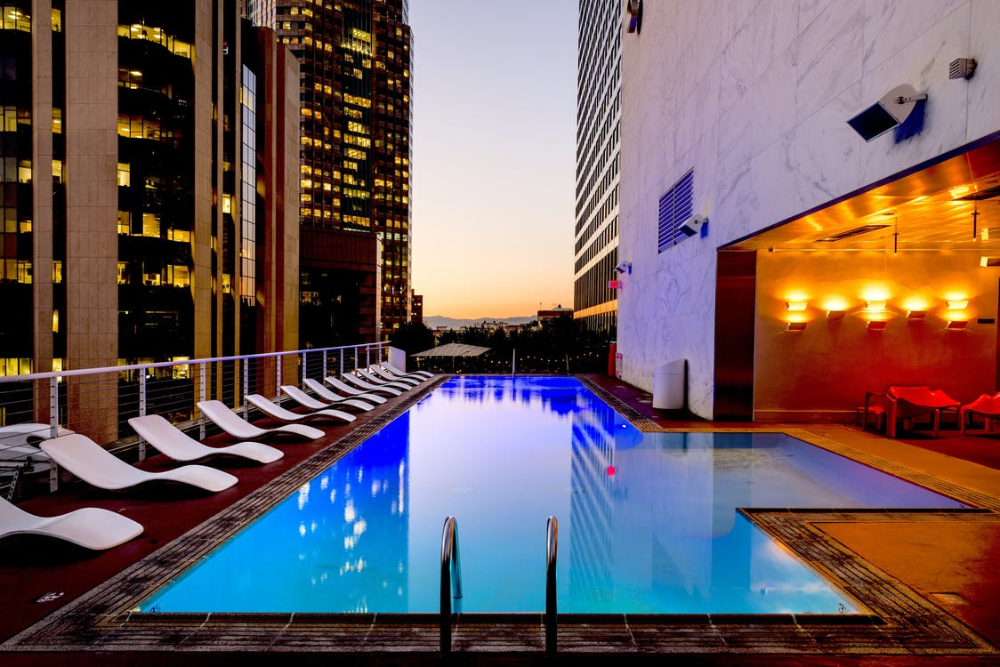

درباره هتل آتریا
گروه هتلهای آتریا ساخت اولین هتل خود را در سال ۱۳۸۰ در آستارای استان گیلان به پایان بردند. همان زمان مسوولان این گروه اعلام کردند که دومین هتل از سری هتلهای آتریا در تهران ساخته خواهد شد. ۲۷ بهمن ۱۳۸۵ کلنگ ساخت هتل آتریا خلیج فارس در بلوار کشاورز تهران زده شد و ۲۷ ماه بعد در اسفند ۱۳۸۸ افتتاح شد.
گروه هتلهای آتریا ساخت اولین هتل خود را در سال ۱۳۸۰ در آستارای استان گیلان به پایان بردند.

گروه هتلهای آتریا ساخت اولین هتل خود را در سال ۱۳۸۰ در آستارای استان گیلان به پایان بردند. همان زمان مسوولان این گروه اعلام کردند که دومین هتل از سری هتلهای آتریا در تهران ساخته خواهد شد. ۲۷ بهمن ۱۳۸۵ کلنگ ساخت هتل آتریا خلیج فارس در بلوار کشاورز تهران زده شد و ۲۷ ماه بعد در اسفند ۱۳۸۸ افتتاح شد.
گروه هتلهای آتریا ساخت اولین هتل خود را در سال ۱۳۸۰ در آستارای استان گیلان به پایان بردند. همان زمان مسوولان این گروه اعلام کردند که دومین هتل از سری هتلهای آتریا در تهران ساخته خواهد شد. ۲۷ بهمن ۱۳۸۵ کلنگ ساخت هتل آتریا خلیج فارس در بلوار کشاورز تهران زده شد و ۲۷ ماه بعد در اسفند ۱۳۸۸ افتتاح شد.